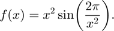

Approximate a highly fluctuating curve using funappx_g
Author: Sou-Cheng Choi, July 2017
Contents
Function definition
Define a highly fluctuating function as follows:

close all; clear all; format compact; format short; f = @(x) x.^2 .* sin((2*pi)./x.^2);
Function approximation
We use funappx_g to approximate over the interval , where and :
a = 0.1; b = 2.5; [q,out] = funappx_g(f, a, b);
Plots of the function and approximant
We plot and the approximant returned by funappx_g, , below:
figure; x = a:1e-6:b; plot(x,f(x),'r.', x,q(x),'g-'); xlabel('$x$','interpreter','latex') h_legend=legend('$f(x)$', '$q(x)$'); set(h_legend,'interpreter','latex'); axis tight
Plot of the approximation errors
The following plot shows that all pointwise absolute errors are less than the default tolerance of .
figure; semilogy(x,abs(f(x)-q(x))); xlabel('$x$','interpreter','latex') ylabel('absolute error') axis tight max_abs_error = max(abs(f(x)-q(x)))
max_abs_error = 9.9886e-08
A slightly different example
If we changes  to a smaller number such as
to a smaller number such as  , then even if we relax the tolerance to , funappx_g may still return an approximant that fails to meet the tolerance. The reason is that on is no longer in the cone of functions conducive for successful approximation.
, then even if we relax the tolerance to , funappx_g may still return an approximant that fails to meet the tolerance. The reason is that on is no longer in the cone of functions conducive for successful approximation.
a = 1e-2; abstol = 1e-4; [q2,out2] = funappx_g(f, a, b, abstol); figure; x = a:1e-6:b; semilogy(x,abs(f(x)-q2(x))); xlabel('$x$','interpreter','latex') ylabel('absolute error') axis tight max_abs_error = max(abs(f(x)-q2(x)))
max_abs_error =
0.0076
A workaround
We can widen the cone by increasing the number of initial points given to funappx_g.
inparam.a = a; inparam.b = b; inparam.abstol = abstol; inparam.ninit = 5e6; inparam.nmax = inparam.ninit*10; [q3,out3] = funappx_g(f, inparam); x = a:1.0/(out3.npoints*2):b; figure; semilogy(x,abs(f(x)-q3(x))); xlabel('$x$','interpreter','latex') ylabel('absolute error') axis tight max_abs_error = max(abs(f(x)-q3(x)))
max_abs_error = 9.9093e-05
A better way
Using a large value of ninit defeats the purpose of funappx_g's locally adaptive design. Notice that the failure region was ![$[0.01,0.1]$](demo_funappx_g1_eq04754028844186837832.png) , So we can use funappx_g with a high value of ninit only in this region.
, So we can use funappx_g with a high value of ninit only in this region.
inparam.a = a; inparam.b = 0.1; inparam.ninit = 2e5; inparam.nmax = 1e7; inparam.output_x = 1; [q4,out4] = funappx_g(f, inparam); % Use default value of ninit on [0.1,2.5] inparam.a = inparam.b; inparam.b = b; inparam.ninit = 20; [q5,out5] = funappx_g(f, inparam); % Define a new approximant on [a,b] xx = [out4.x, out5.x(2:end)]; yy = [out4.y, out5.y(2:end)]; if gail.matlab_version >= 8.3 fappx = griddedInterpolant(xx,yy,'linear'); else fappx = @(t) ppval(interp1(xx,yy,'linear','pp'), t); end; % Evaluate the error again x = a:1e-7:b; max_abs_error = max(abs(f(x)-fappx(x)))
max_abs_error = 9.9616e-06
References
[1] Sou-Cheng T. Choi, Yuhan Ding, Fred J. Hickernell, Xin Tong, "Local Adaption for Approximation and Minimization of Univariate Functions," Journal of Complexity 40, pp. 17-33, 2017.
[2] Sou-Cheng T. Choi, Yuhan Ding, Fred J. Hickernell, Lan Jiang, Lluis Antoni Jimenez Rugama, Da Li, Jagadeeswaran Rathinavel, Xin Tong, Kan Zhang, Yizhi Zhang, and Xuan Zhou, GAIL: Guaranteed Automatic Integration Library (Version 2.3.1) [MATLAB Software], 2020. Available from http://gailgithub.github.io/GAIL_Dev/